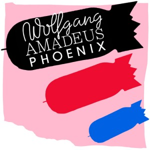
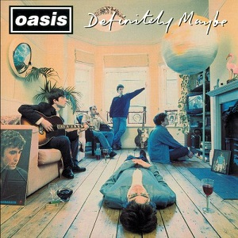

My Favourite Albums
 |
Howework (1997)The debut studio album by the French electronic music duo. The album revived house music and departed from the Eurodance formula. |
|  |
Wolfgang Amadeus Phoenix (2009)The album earned a Grammy Award for Best Alternative Music Album. One of the best compositions of the previous decade. |
|  |
Definitely Maybe (1994)The album helped to spur a revitalisation in British pop music in the mid-nineties. It was the fastest selling debut album of all time in the UK when it was released. |